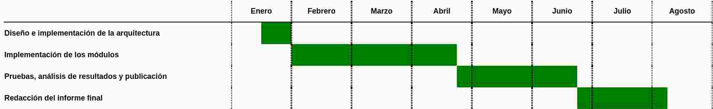

Propuesta de Proyecto Final de Carrera
Implementación de un algoritmo
de aprendizaje semi-supervisado sobre Spark
Autor: Franco Victorio
Director: Cristian Yones
Aprendizaje supervisado
Aprendizaje supervisado

Aprendizaje supervisado

Aprendizaje supervisado
Aprendizaje no supervisado
Aprendizaje no supervisado
Aprendizaje semi-supervisado

Aprendizaje semi-supervisado

Big data
- Cantidades de datos inmanejables en un solo servidor
- Almacenamiento y procesamiento distribuidos
- Apache Spark
Objetivos
-
Objetivos generales:
- Implementar un algoritmo de aprendizaje semi-supervisado en Apache Spark
- Validar la utilidad de combinar aprendizaje semi-supervisado con tecnologías de big data.
Objetivos
-
Objetivos específicos:
- Implementar el pipeline sobre el que estará construido el algoritmo.
- Implementar cada uno de los módulos del algoritmo.
- Realizar pruebas para validar la utilidad de combinar aprendizaje semi-supervisado con tecnologías de big data.
- Realizar pruebas comparativas de desempeño y eficiencia utilizando bases de datos reales y analizar los resultados.
- Publicar el algoritmo en los canales apropiados para facilitar su utilización.
Alcance
- Ejecución sobre Spark
- Realización de pruebas sobre Google Cloud
- Publicado como librería, sin CLI o GUI
- Comparaciones con algoritmos de libre acceso.
Metodología
Etapa 1: Diseño e implementación de la arquitectura
Metodología
Etapa 2: Implementación de los módulos
Metodología
Etapa 3: Pruebas, análisis de resultados y publicación
Plan de tareas
| Tarea | Horas | Semanas |
|---|---|---|
| Diseño e implementación de la arquitectura | 30 | 1-2 |
| Implementación de los módulos | 200 | 3-15 |
| Pruebas, análisis de resultados y publicación | 110 | 16-23 |
| Redacción del informe final | 90 | 24-29 |
| Total | 430 | 29 |
Cronograma
| Tarea | Período |
|---|---|
| Diseño e implementación de la arquitectura | Del 15/01 al 27/01 |
| Implementación de los módulos | Del 29/01 al 20/04 |
| Pruebas, análisis de resultados y publicación | Del 23/04 al 22/06 |
| Redacción del informe final | Del 25/06 al 03/08 |
Cronograma
Riesgos
- Problemas de eficiencia
- Costos de ejecución elevados
- Dificultad para conseguir datos de prueba
Presupuesto
| Razón | Concepto | Monto |
|---|---|---|
| Remuneración del estudiante | Gasto | $107.500 |
| Remuneración del director | Gasto | $10.750 |
| Utilización de Google Cloud | Gasto | $5400 |
| Servicios | Gasto | $1000 |
| PC | Amortización | $1250 |
| Total | $125.900 | |